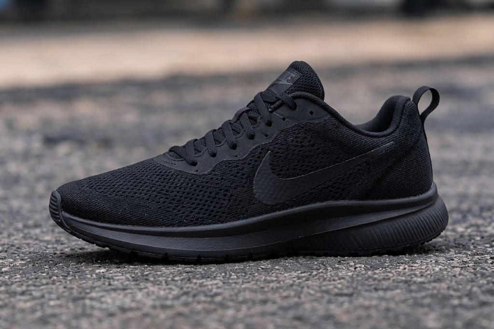
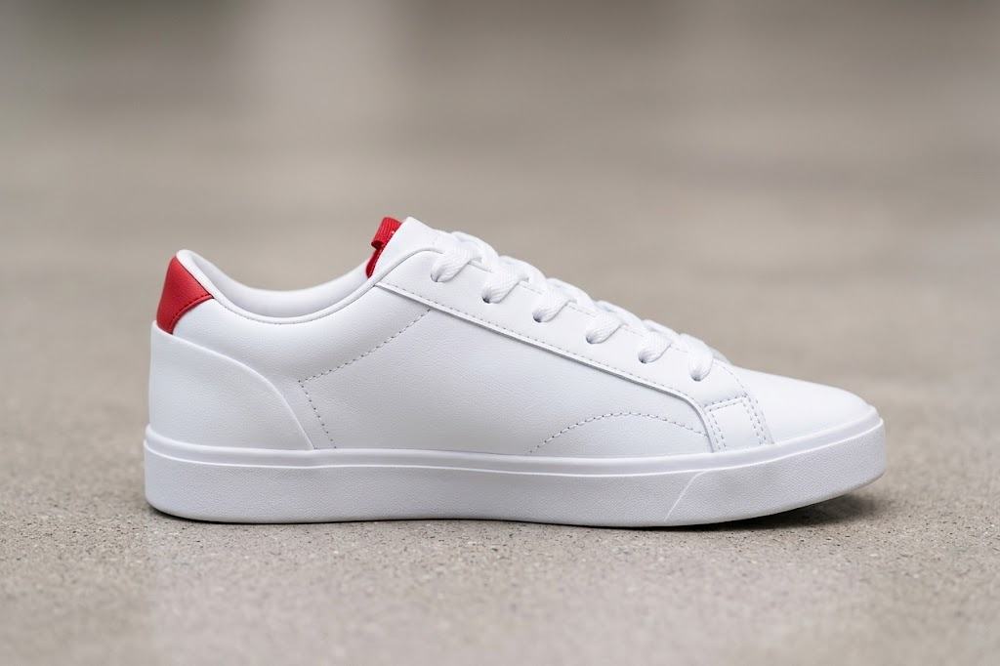
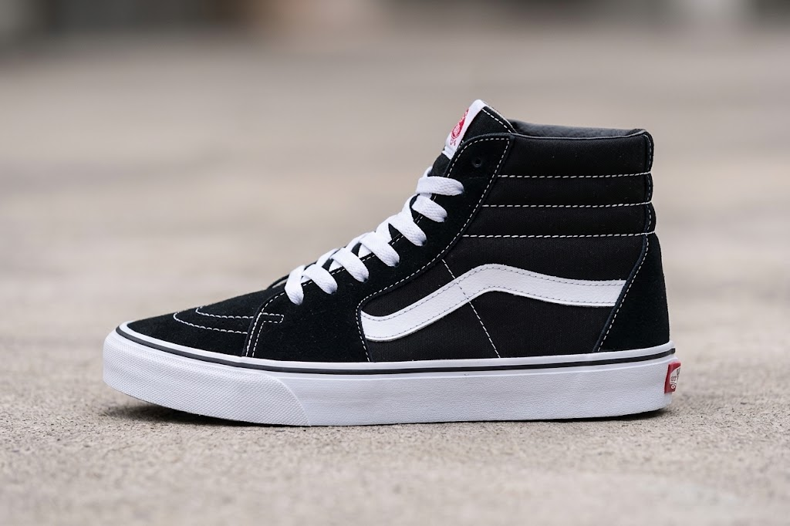
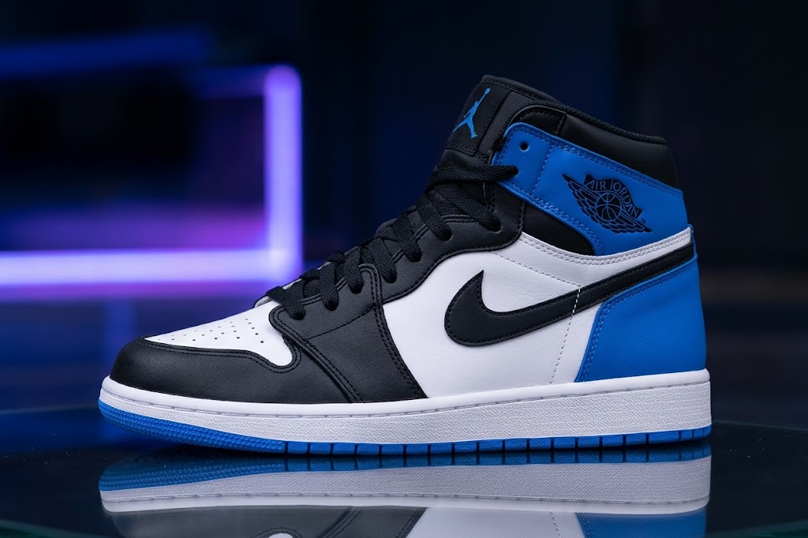

Tênis Esportivo
Desenvolvido para oferecer conforto e estabilidade durante atividades físicas. É uma ótima opção para caminhadas, corridas e treinos.
Voltar ao início →Estilo, conforto e personalidade!

Desenvolvido para oferecer conforto e estabilidade durante atividades físicas. É uma ótima opção para caminhadas, corridas e treinos.
Voltar ao início →
Perfeito para o dia a dia, combina com diferentes roupas e pode ser usado na escola, no trabalho ou em passeios.
Voltar ao início →
Inspirado na cultura urbana, esse modelo traz estilo e personalidade. É muito utilizado por quem gosta de moda e looks modernos.
Voltar ao início →
Modelos especiais para quem gosta de colecionar calçados diferentes e conhecer lançamentos exclusivos.
Voltar ao início →